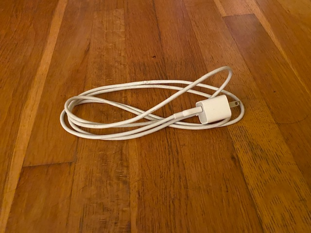
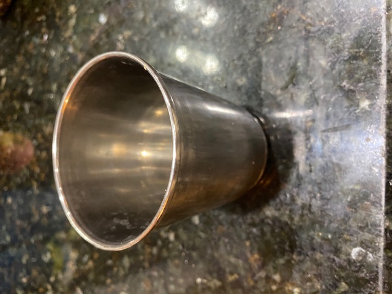
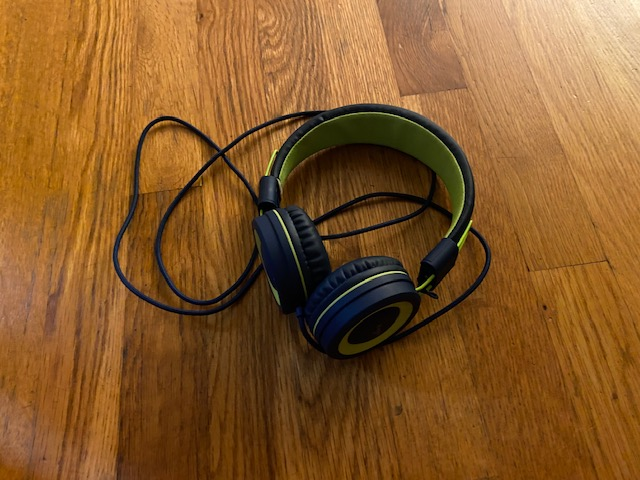
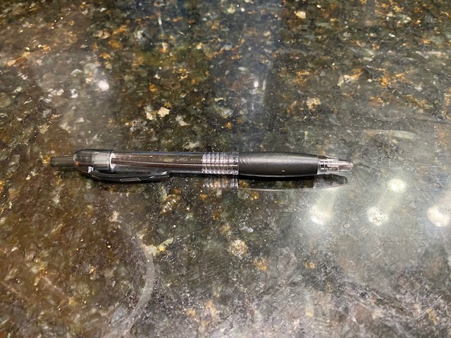
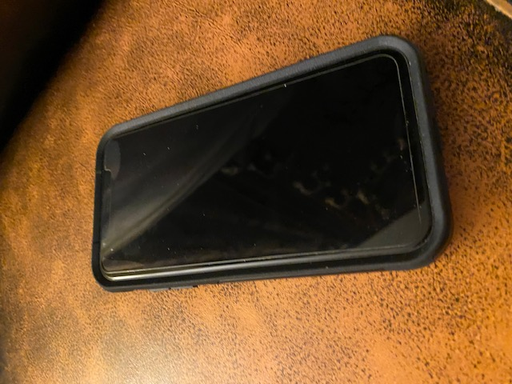
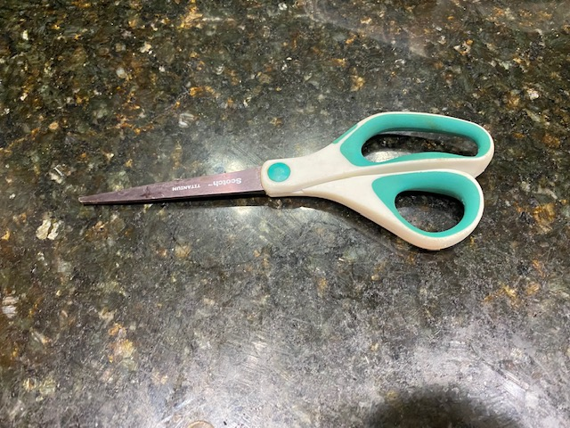
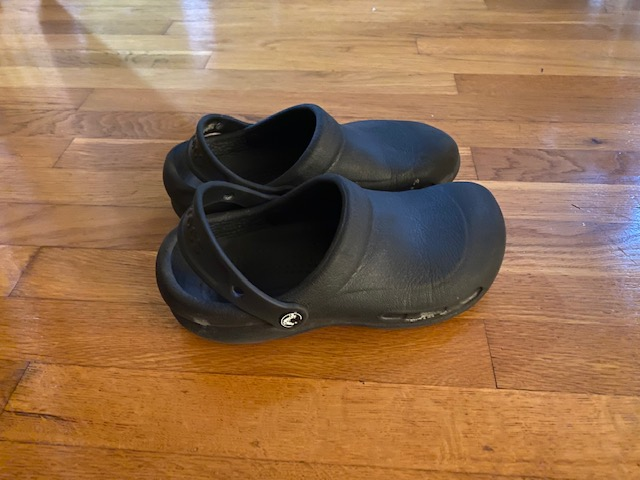
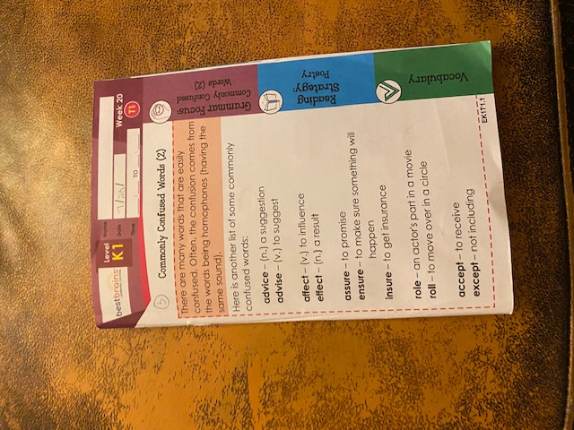
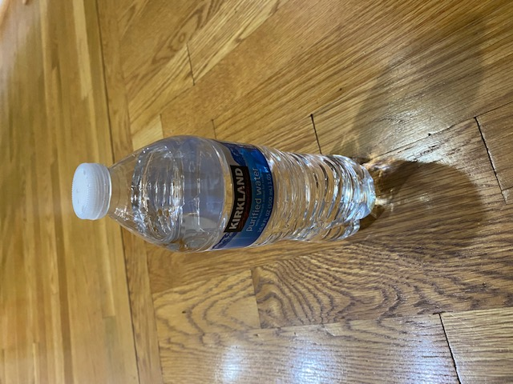

Test Images -









Output on Google lens-
9 correct: apple, charger, sup, headphones, pen, phone, scissors, shoes, and water bottle
Output on Mobilenet-
4 correct: study book, water bottle, phone, and pen.
Result - Google lens wins!
I have tested 10 images for both Mobilenet and Google lens. 9 of those images were correctly detected by
Google lens. Another 4 of those images were correctly detected by Mobilenet. So, based on my Case study,
Google lens is more reliable.